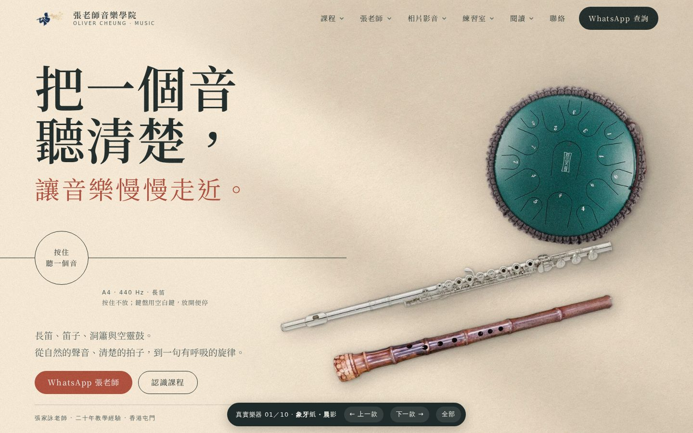
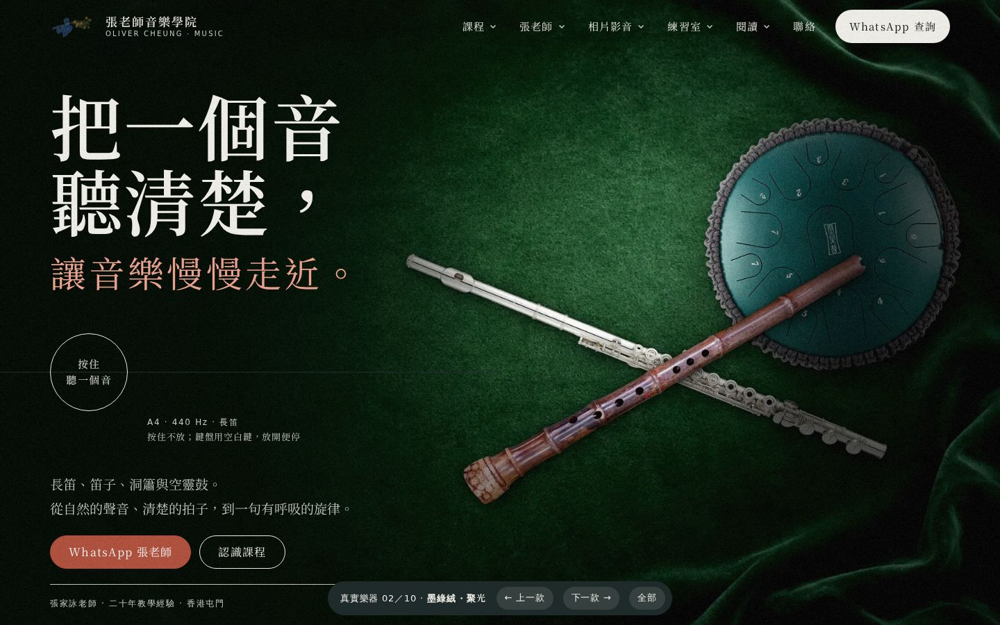
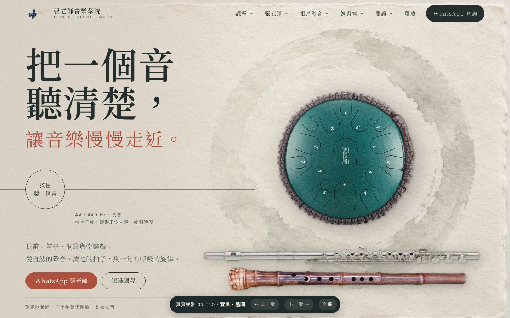
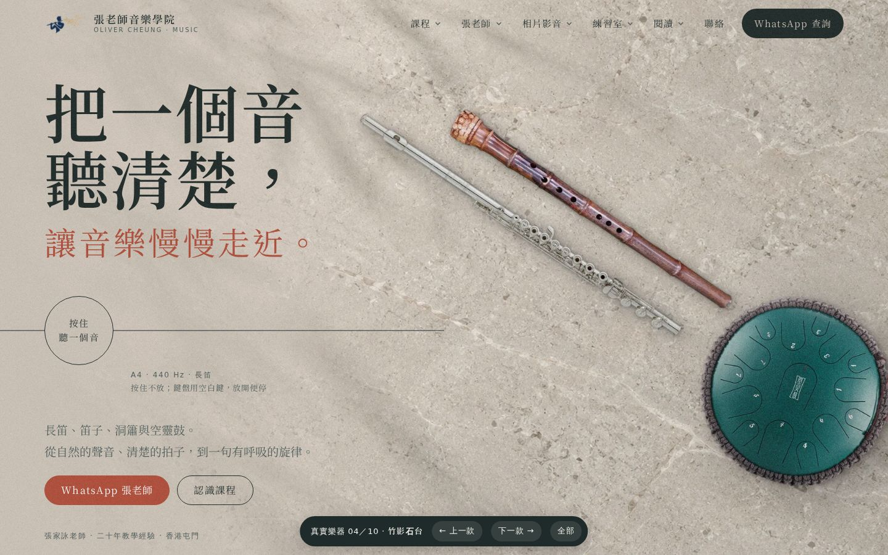
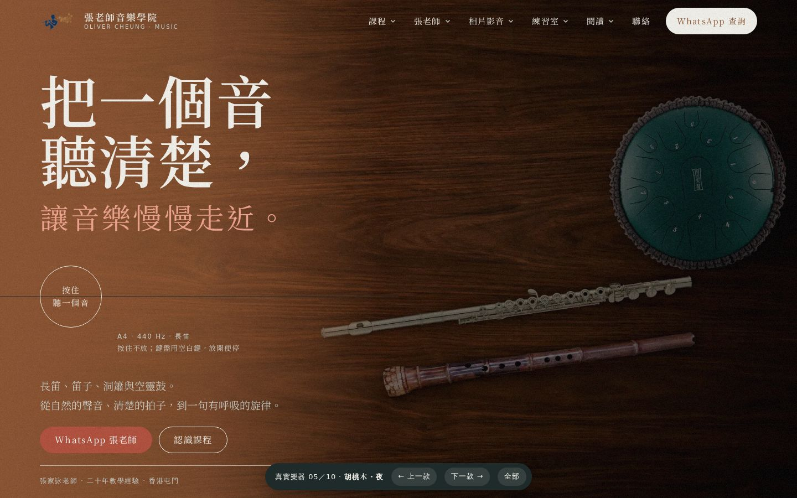
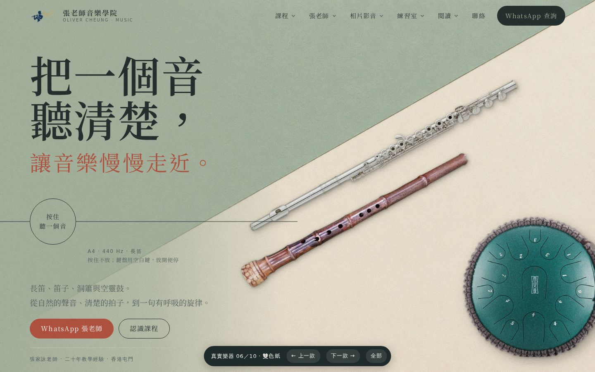
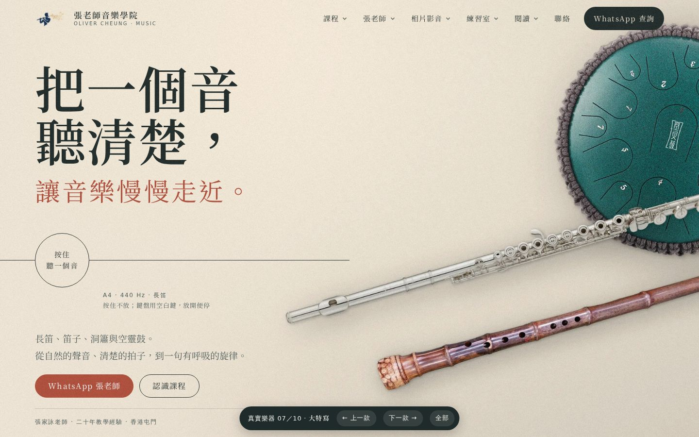
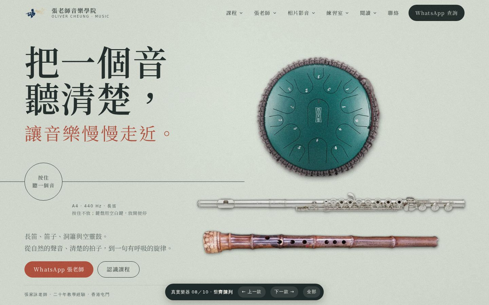
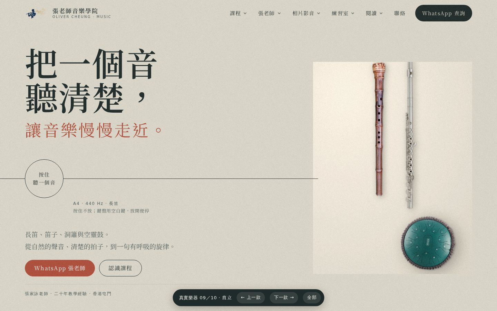
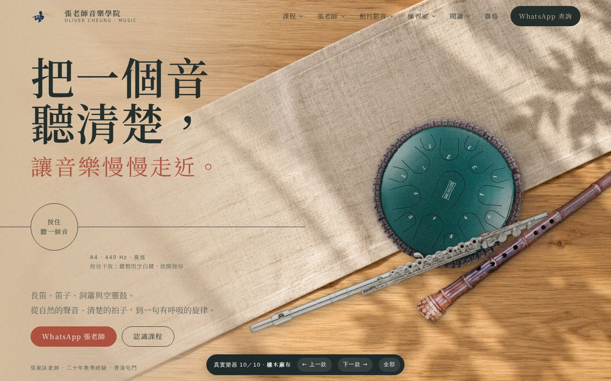

長笛、南簫（竹根大頭簫）、空靈鼓都用同一套真實相片，只換背景、光線和擺位。每款都是完整首頁，點入去可捲動、按住聽音，底部按鈕可前後切換。

01象牙紙・晨影象牙色紙面，左上窗影斜落；鼓在上，兩支笛平行斜放。

02墨綠絨・聚光深墨綠絨布，一束聚光照着鼓，兩支笛交叉。深色版。

03宣紙・墨圓手造宣紙上一個淡墨圓，鼓坐在圓中，兩支笛橫放其下。

04竹影石台淺色石台，竹葉影子落在左上；兩支笛斜放，鼓在右下。

05胡桃木・夜深胡桃木枱，暖光由左邊來，右邊漸暗。

06雙色紙鼠尾草綠與米色紙斜分兩半，長笛沿分界線，南簫在下。

07大特寫放大到樂器細節：長笛按鍵、南簫竹根與指孔、鼓面一角，畫面向外延伸。

08整齊陳列淺灰綠紙面，三件樂器上下對齊排好，像樂器目錄。

09直立兩支笛並排直放，鼓在下方；右邊高身直圖。

10橡木麻布沿用第 12 款的橡木枱與麻布，重新排位：鼓在麻布中央，兩支笛呈扇形。